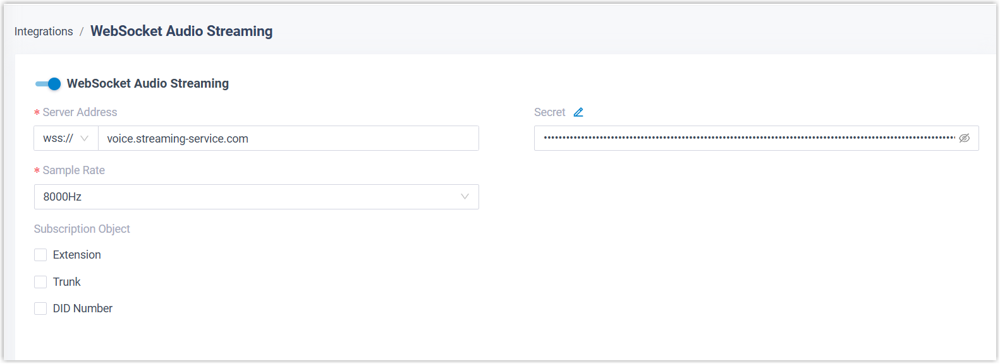

Enable WebSocket Real Time Audio Streaming
This topic describes how to enable WebSocket Real Time Audio Streaming, including configuring server address and selecting which extensions, trunks, or DID numbers' call audio streams will be transmitted.
Requirements
- Firmware: 83.20.0.x or later
- Subscription: Ultimate Plan
-
You have obtained the server address of the third-party platform for receiving the audio stream.
Procedure
- Log in to PBX web portal, go to .
- Turn on WebSocket Audio Streaming to enable the feature.
- Configure WebSocket audio streaming settings:

- In the Server Address, select the protocol
(
ws://orwss://) and enter the server address for receiving real-time audio streaming. - Optional:
In
the Secret field,
enter
the authentication credentials provided by the
third-party platform. Note: You can click
 to customize the option name
based on the specific authentication field names required by
different platforms.
to customize the option name
based on the specific authentication field names required by
different platforms. - In the Sample Rate drop-down list, select the
sample rate of the audio stream to be transmitted.Note: The audio encoding format is fixed as
PCM. - In the Subscription Object, specify which
calls will be transmit to the third-party platform via WebSocket.
- Extension: Audio streams from calls involving the selected extensions will be transmitted to the third-party platform.
- Trunk: Audio streams from inbound and outbound calls routed through the selected trunks will be transmitted to the third-party platform.
- DID Number: Audio streams from
inbound calls
via the trunks
associated with the selected DID numbers
will be transmitted to the third-party platform. Note: The DID numbers listed here are synchronized from the DID numbers configured in trunks.
- In the Server Address, select the protocol
(
- Click Save.
Result
For calls that match the subscribed extension, trunk, or DID number criteria, the complete audio streams of all participants in the call will be transmitted to the third-party platform in real time.